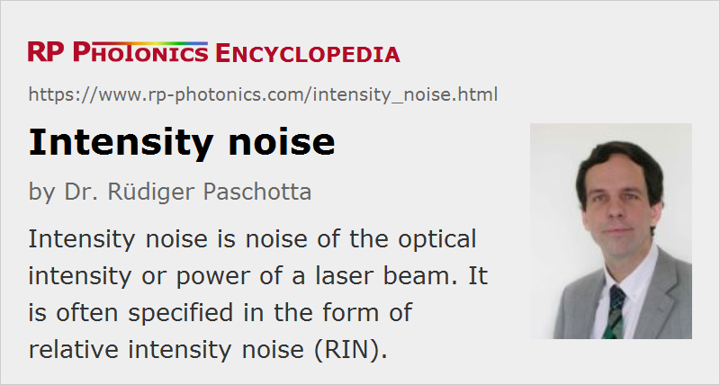

Intensity Noise
Definition: noise of the optical intensity or power of a laser beam
More general terms: laser noise
More specific terms: relative intensity noise
German: Intensitätsrauschen
Categories: lasers, fluctuations and noise
How to cite the article; suggest additional literature
Author: Dr. Rüdiger Paschotta
An important type of noise in a light beam is noise of its intensity. Strictly, the noise of the optical power, rather than of the optical intensity, is usually considered, but the common term is intensity noise rather than power noise.
Considerable confusion can arise from the fact that in the context of intensity noise the term power occurs with two substantially different meanings:
- The fluctuating quantity of interest is the optical power, meaning the delivered light energy per unit time.
- Noise is often quantified with a power spectral density, where power is related to the squares of fluctuation amplitudes; here we are dealing with noise powers.
When measuring intensity noise (e.g. of a laser) with a photodiode, one obtains a photocurrent which is directly proportional to the optical power. The photocurrent is often converted into a voltage, for example based on a resistor. The fluctuating voltage may then be fed into an electronic spectrum analyzer, which displays the frequency-dependent power spectral density (PSD) of its input voltage. Here, power means electrical power, which is proportional to the voltage squared, and thus proportional to the square of the optical power. That PSD is a measure for the noise power and has units of V2/Hz, although it is often displayed as a logarithmic quantity in units of dBm/Hz. Using the proportionality between voltage and optical power, one could calculate from that the PSD of the optical power with units of W2/Hz.
If the voltage input of the spectrum analyzer is doubled, e.g. by reducing the attenuation of the laser beam hitting the photodetector, the electrical powers rise by a factor of 4, corresponding to 6 decibels.
Further difficulties arise from the fact that electronic spectrum analyzers are usually not calibrated for correctly displaying noise power densities; one needs to apply certain corrections.
Specifications for Intensity Noise
Intensity noise is usually quantified as relative intensity noise (RIN), i.e. as noise of the optical power divided by the average optical power. Common specifications are based on
- an r.m.s. (root-mean-square) value for a certain measurement bandwidth
- a power spectral density S(f)
Sometimes one encounters specifications like “±0.1%”, which are not valid without further specifications, since statistical aspects are not properly described, and it is not clear which range of noise frequencies is considered.
More details are found in the article on noise specifications.
Measurement of Intensity Noise
Intensity noise is normally measured by detecting the intensity (or power) with a fast photodetector (e.g. with a p–i–n photodiode) and evaluating the noise spectrum with an electronic spectrum analyzer. Although this appears simple in principle, there can be various technical challenges:
- The calibration of the intensity noise level often involves difficulties. Although an electronic spectrum analyzer displays noise spectra in proper units like dBc/Hz (where dBc = dB below carrier), the calibration usually has to be corrected because it is valid for sinusoidal signals, but not for random noise. It is common that 2 decibels have to be added to the noise level, but this can depend on the detailed settings of the spectrum analyzer such as the detection mode. Further difficulties arise when the DC component of the photocurrent needs to be suppressed in a preamplifier; a separate calibration measurement may then be required.
- The photodetector must of course be operated in a region with linear response, i.e., it should never be saturated. For measurements on low repetition rate pulse trains, this can imply that the recorded average power is fairly low, so that a high sensitivity is difficult to achieve.
- For pulse trains, the measured signal is influenced not only by intensity noise, but also by timing jitter, and both types of noise can even be correlated. Ignoring this can easily lead to wrong results.
For the characterization of low-frequency noise, it may be required to record the power variations in the time domain and process them numerically.
Origins of Laser Intensity Noise
Intensity noise of a laser results partly from quantum noise (associated with laser gain and resonator losses) and partly from technical noise sources such as excess noise of the pump source, vibrations of resonator mirrors, thermal fluctuations in the gain medium, etc. The resulting intensity noise also depends on the operation conditions; in particular, it often becomes weaker at high pump powers, where relaxation oscillations are strongly damped. There are methods to reduce the noise further by using a feedback system (→ stabilization of lasers).
In most cases, the lowest possible intensity noise level for laser beams results from shot noise. At least at high noise frequencies, well above the relaxation oscillation frequency, this noise level is approached by many lasers. However, for so-called squeezed states of light, the intensity noise can be below the shot noise, at the cost of increased phase noise.
Noise Reduction
Intensity noise of a laser can be reduced in various ways:
- Influences of external noise sources can be reduced, e.g. by operating laser diodes with a well-stabilized injection current.
- The laser design can be optimized so that its susceptibility to external noise and the influence of quantum noise are minimized.
The intensity noise in a laser beam (external to the laser cavity) may be reduced with a noise eater.
Suppliers
The RP Photonics Buyer's Guide contains 1 supplier for intensity noise measurement equipment.
Questions and Comments from Users
Here you can submit questions and comments. As far as they get accepted by the author, they will appear above this paragraph together with the author’s answer. The author will decide on acceptance based on certain criteria. Essentially, the issue must be of sufficiently broad interest.
Please do not enter personal data here; we would otherwise delete it soon. (See also our privacy declaration.) If you wish to receive personal feedback or consultancy from the author, please contact him e.g. via e-mail.
By submitting the information, you give your consent to the potential publication of your inputs on our website according to our rules. (If you later retract your consent, we will delete those inputs.) As your inputs are first reviewed by the author, they may be published with some delay.
Bibliography
| [1] | R. Paschotta, "Noise in Laser Technology – Part 1: Intensity and Phase Noise" |
See also: noise specifications, relative intensity noise, phase noise, laser noise, shot noise, quantum noise, noise eaters
and other articles in the categories lasers, fluctuations and noise
|  |
If you like this page, please share the link with your friends and colleagues, e.g. via social media:
These sharing buttons are implemented in a privacy-friendly way!